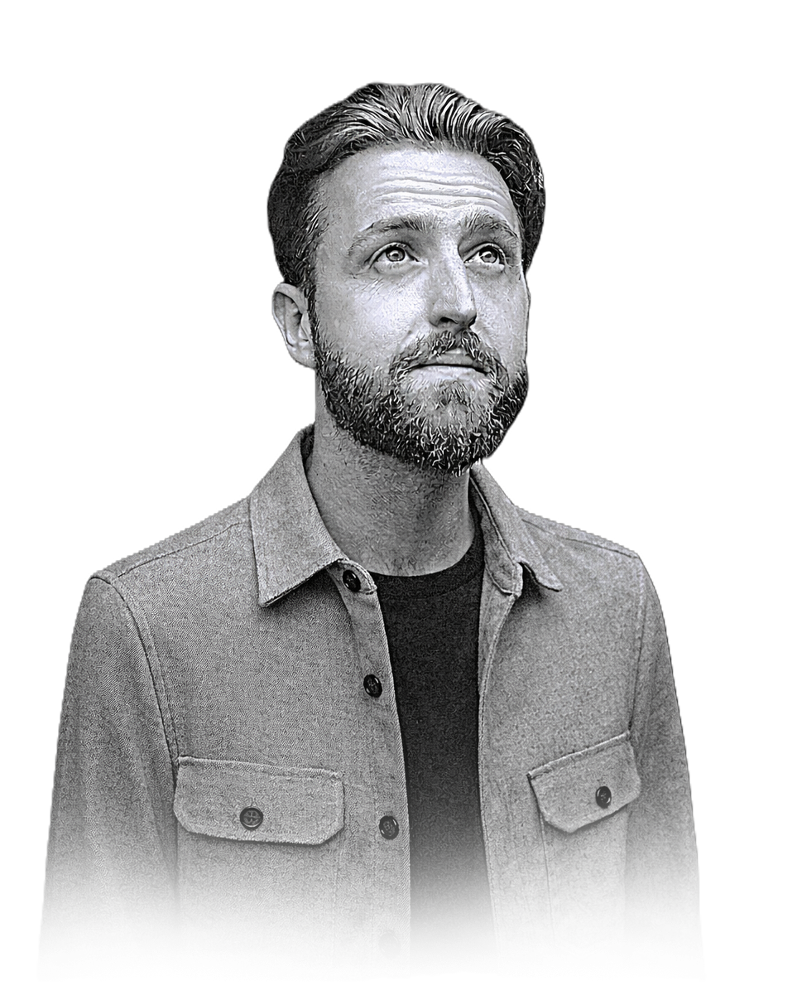

Andrew Paice
MSc (Hons) · BSc (Hons)
PhD Candidate, Cognitive Psychology
University of Hertfordshire
From questions
to findings.
Independent end-to-end researcher.
Helping organisations get the evidence they need.
PhD-level expertise across research design, statistical modelling, and analysis.
Scoped to your needs. Get in touch to discuss →
Click any card to see what's involved.
Click any project to read what was involved.
Education · Cognitive Science · International
A multi-site international trial applying memory science to multiplication fact learning, achieving a 37%+ improvement in outcomes across two countries and three languages.
The question was whether treating multiplication facts as verbal memory sequences, drawing on an effect known as the Hebb Repetition Effect, would produce meaningfully better learning outcomes than standard teaching methods. I contributed to the study design and wrote the standardised protocols to ensure recruitment and data collection were carried out consistently across all participating schools.
I supported and co-coordinated the research teams across the UK and Belgium, working to keep procedures aligned across institutions and languages. The statistical pipeline used generalised linear mixed models (GLMMs) in R to account for both participant-level and item-level variance. The result was a 37%+ improvement in arithmetic learning outcomes, with evidence-based materials produced for classroom use across both countries.
Skills and tools: protocol design, multi-site coordination, standardisation, GLMMs, R, stakeholder management, ethics applications, evidence translation.
Product Delivery · Training · Higher Education
Commissioned by the University to design, build, and deliver a full statistics module for Life and Medical Sciences postgraduates, completed in two months, now self-sustaining at 100+ students annually.
The University needed a statistics module for MSc Life and Medical Sciences students with no existing curriculum, no materials, and a two-month delivery window. I was commissioned to build it end-to-end: scoping the learning needs of the cohort, negotiating the syllabus with the client, and designing all content and assessments from scratch.
The module was built as an online product designed to run autonomously, without my continued involvement. That meant everything had to be self-contained: clear enough for students to work through independently, robust enough to be delivered by others, and structured for scalable annual delivery. It covers descriptive and inferential statistics, hypothesis testing, regression, and data visualisation, with practical sessions in SPSS. It was delivered on time, fully documented, handed over, and has reached hundreds of postgraduate students every year since.
Skills and tools: curriculum design, rapid scoping, stakeholder negotiation, online module development, SPSS, statistics training, product handover.
Behaviour Change · Systems Design · Research Culture
Treated the adoption of Open Science practices as a behaviour change problem, not a communications one. Designed and built a seven-component system from needs analysis to full handover.
Getting 150+ researchers to change their practice is not an information problem: it is a behaviour change problem. I began with structured focus groups and stakeholder interviews to identify seven distinct engagement segments across the research community, then designed interventions specific to each.
I built a seven-component ecosystem from scratch: brand identity, multi-platform content strategy, a measurable pledge system, an analytics infrastructure, peer accountability features, and full handover documentation. The design drew on behavioural science principles including default bias, social proof, and commitment devices. The system was handed over ready for deployment and sustained operation without my involvement.
Skills and tools: needs analysis, behaviour change frameworks, focus groups, systems design, stakeholder management, content strategy, end-to-end delivery.
Consultancy · Statistics · Mentoring
Individual sessions supporting researchers, postgraduates, and early-career academics through analysis problems: from choosing the right model to interpreting and reporting results.
Over eight years I have provided individual statistics support to BSc, MSc, and PhD researchers across psychology, health, education, and linguistics. Sessions ranged from one-off problem-solving: diagnosing why a model wasn't converging, selecting an appropriate test, troubleshooting R or SPSS code. Others were longer-term analytical mentoring across a full dissertation or research project.
Common presenting problems included assumption violations, mixed-effects model specification, sample size and power decisions, and result interpretation and write-up.
Skills and tools: R, SPSS, GLMMs, regression, power analysis, data pipelines, plain-language communication.
Clinical Research · Health · Fieldwork
Fieldwork and analysis support on a clinical study examining memory assessment in participants with dementia and mild cognitive impairment, including neurological testing and participant engagement.
This study investigated whether wearable technology could support memory assessment in clinical populations. I conducted neurological baseline assessments to determine participant suitability, engaged directly with participants to ensure their views and needs were incorporated into the process, and contributed to discussions on data analysis strategy.
Working with a vulnerable population required careful attention to ethics compliance, safeguarding, and participant wellbeing throughout. The experience developed my understanding of how research design must adapt when working outside a standard lab setting, managing unpredictability, attrition, and the practical constraints of clinical fieldwork.
Skills and tools: clinical fieldwork, neurological assessment, participant management, ethics and safeguarding, data analysis, stakeholder engagement.
Experimental Psychology · Eye-tracking · Consciousness
Contributed to an investigation of visual processing and consciousness using eye-tracking analysis of the strange face illusion: a perceptual phenomenon where faces appear to distort under sustained gaze.
The strange face illusion, in which faces appear to distort when viewed steadily in low light, offers a window into how the visual system constructs conscious perception. I contributed to this study through eye-tracking data analysis, supporting the team on data visualisation, statistical interpretation, and experimental design decisions.
The analysis required working with time-series data from eye-tracking equipment, handling the specific challenges of gaze data including fixation detection, saccade classification, and signal noise. The project sits at the intersection of experimental psychology and consciousness research, an area I find genuinely interesting and where rigorous methodology is particularly important given the difficulty of operationalising subjective experience.
Skills and tools: eye-tracking analysis, time-series data, R, data visualisation, experimental design, consciousness research.
Cognitive Science · Publication · Sequence Learning
A peer-reviewed experimental programme examining whether the Hebb Repetition Effect extends to metrical structure in word lists, resulting in a publication in one of the field's leading journals.
The Hebb Repetition Effect describes the finding that repeating a sequence improves recall over time, even without conscious awareness. This programme of research asked whether the effect generalises to metrical structure in word lists: that is, whether rhythmic or stress patterns in language act as implicit learning cues in the same way positional sequences do.
I designed and ran a series of behavioural experiments across memory, language, and semantics, analysed the data using GLMMs and GAMs in R, and co-authored the resulting paper. The work was presented at the Experimental Psychology Society and published in the Journal of Experimental Psychology in 2025. The research contributes to understanding how statistical regularities in language are implicitly encoded, with downstream implications for learning and memory research.
Skills and tools: experimental design, behavioural experiments, GLMMs, GAMs, R, academic writing, pre-registration, open science.
A free 30-minute consultation to explore what rigorous research design and analysis could do for your work. Pro-bono engagements welcome, capacity permitting.